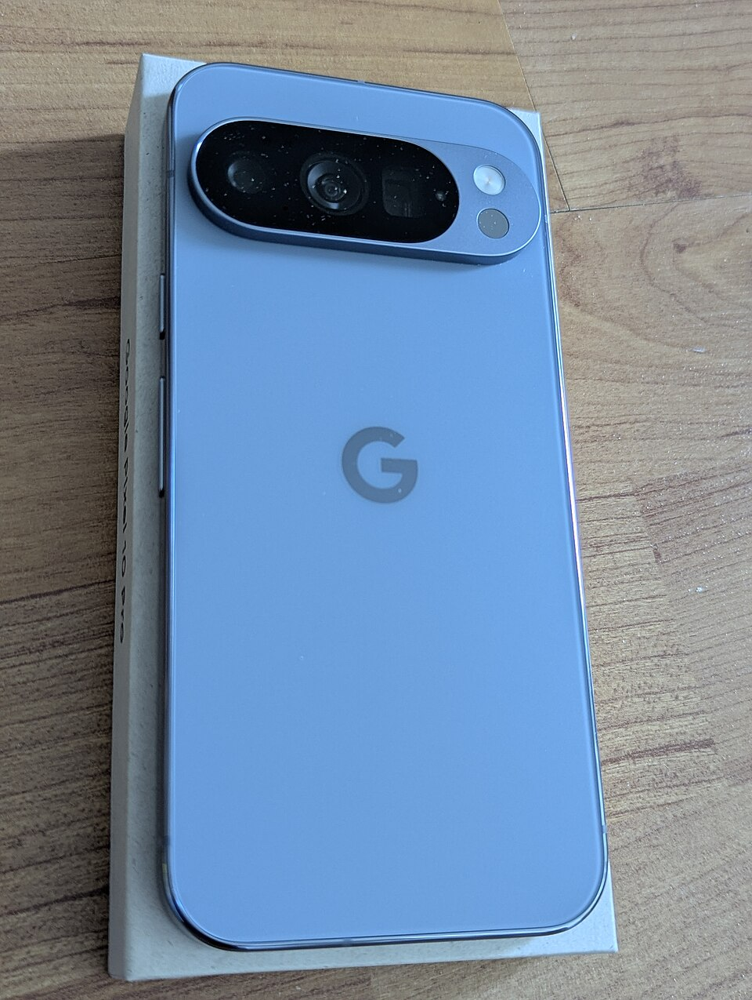

The address is the product.
Create a server, pick a name, and it answers under a normal subdomain in the vanilla server list. No port to remember, no mod on the client, no account needed to join.
Minecraft → Multiplayer → Add Server → Done
Install, open, invite.
The first start downloads the server software and a matching Java runtime on the device. After that it is a button, the same as any app on the phone.
It sleeps when nobody plays.
Servers hibernate instead of running the battery empty: the world is put away, the address stays yours, and the app wakes it when the next player knocks. Scheduled restarts and rotating backups run in the same place.
Six engines, one installer.
Paper or Purpur for a smooth survival world, Fabric, Forge and NeoForge for mod packs, plain Vanilla, and Pumpkin, the Rust server that boots in milliseconds. The app downloads the right build and keeps the Java version in line.
KodaDash - koda-world in the browser
[12:04:11] Starting minecraft server version 1.21.11
[12:04:12] Preparing level "world"
[12:04:14] Done (2.317s)! For help, type "help"
> say Back in five minutes
[12:04:30] [Server] Back in five minutes
[12:07:02] Player Melli joined the gameA console in the browser.The live log, typed commands, players kicked or op'd, from any computer that has the link.
Files, plugins, settings.The same place edits server.properties, installs a plugin or pulls a backup, without the phone in hand.
Included, not an upgrade.KodaDash ships with the app. There is no plan to buy and no feature held back.
Bedrock and voice.
The app installs Geyser and Floodgate so phones, consoles and Windows players reach the same world, and sets up Simple Voice Chat with the ports already open. Both show up as their own two fields in the app, because Bedrock clients want an address and a port, not one line.
What this is, plainly.
One developer, in school, building this around a phone instead of around a server room. The lobby, the dashboard, the extension store and this website are part of the same project. Parts of the site were drafted with an AI language model and reviewed by hand; the app, the networking and everything that executes are not. The database, the tunnel server and the law texts are real and hosted in Germany.




Device photographs from Wikimedia Commons, shown for identification only; all rights belong to the respective manufacturers. Full credits in assets/devices/CREDITS.txt.
Common questions.
Short answers to what people ask before they install. Everything else is in the documentation.
How many servers can I host at the same time?
Each account can host a maximum of six (6) servers simultaneously. This limit applies across all server types (Minecraft servers and databases combined) and is in place to ensure fair use of the shared VPS proxy infrastructure. Creating multiple accounts to bypass this limit is not allowed and may result in a permanent ban.
Does my phone need to be on 24/7?
Your server runs only while the KodaHosting app is active on your device. When the app is in the foreground, players can join freely. In the background, the server stays alive with reduced priority. When you close the app, the server stops. You can also hibernate servers to free up resources without deleting them.
Can players join when my phone is asleep?
When your phone's screen is off, Android may put the app into a deep sleep state depending on your battery settings. To keep the server accessible, disable battery optimization for KodaHosting in your Android settings, or keep the device plugged in. Players connecting through our VPS proxy will automatically reconnect once your device wakes up.
How much RAM do I need?
For a small survival server with 5–10 players, 1–2 GB of RAM is sufficient. For larger communities or heavy mod packs, allocate 3–4 GB. The app automatically caps your RAM allocation based on your device's available memory to prevent system instability. You can adjust the allocation at any time from the server management panel.
Is my home IP really hidden?
Yes. All player connections are routed through our central VPS infrastructure using secure reverse proxy tunnels (Bore / FRP). Players only ever see the IP address of our proxy server, never your home IP. This means your network remains completely private and protected from DDoS attacks or targeted harassment.
What happens if my internet disconnects?
If your internet connection drops, players will be disconnected from the server. The server itself continues running on your device, and once your connection is restored, the proxy tunnel reconnects automatically and players can rejoin. World data is always saved locally on your device, so no progress is lost during disconnects.
Can I manage my server from a computer?
Yes. The web dashboard at host.kodanetwork.eu lets you manage all your servers from any browser. The Server Manager gives you access to the live console (where you can execute commands and see server output in real-time) and the file management view (where you can upload worlds, install maps, and edit configuration files). Start, stop, restart, and other server lifecycle actions happen in the app directly. The dashboard communicates with your device through Supabase realtime updates.
Will hosting damage my phone?
Running a Minecraft server is computationally intensive and will generate heat and consume battery. We recommend keeping your device plugged in while hosting, placing it on a cool surface, and avoiding prolonged use in direct sunlight. The app includes a live performance monitor so you can track CPU and RAM usage. We are not liable for hardware damage, overheating, or battery degradation resulting from intensive use, as outlined in our Terms of Service.
Do I need to pay anything?
No. KodaHosting is completely free — no purchase, no subscription, no premium features. The entire app, all engines, the VPS proxy infrastructure and the web dashboard are available to everyone at no cost. If you want to support development, there is an optional Ko-fi link in the app, but it is entirely voluntary and unlocks nothing.
How is this sustainable without charging users?
KodaHosting is a hobby project by a single developer. Server infrastructure costs are kept low through efficient use of resources, and voluntary Ko-fi donations from supporters help cover ongoing hosting costs. There is no business model that requires charging users.